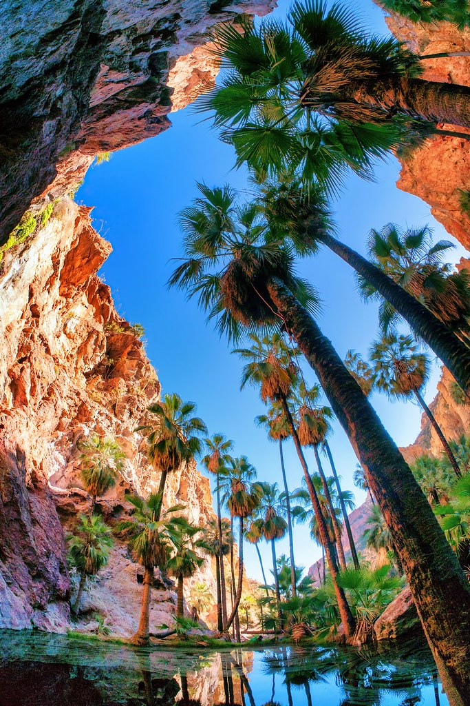
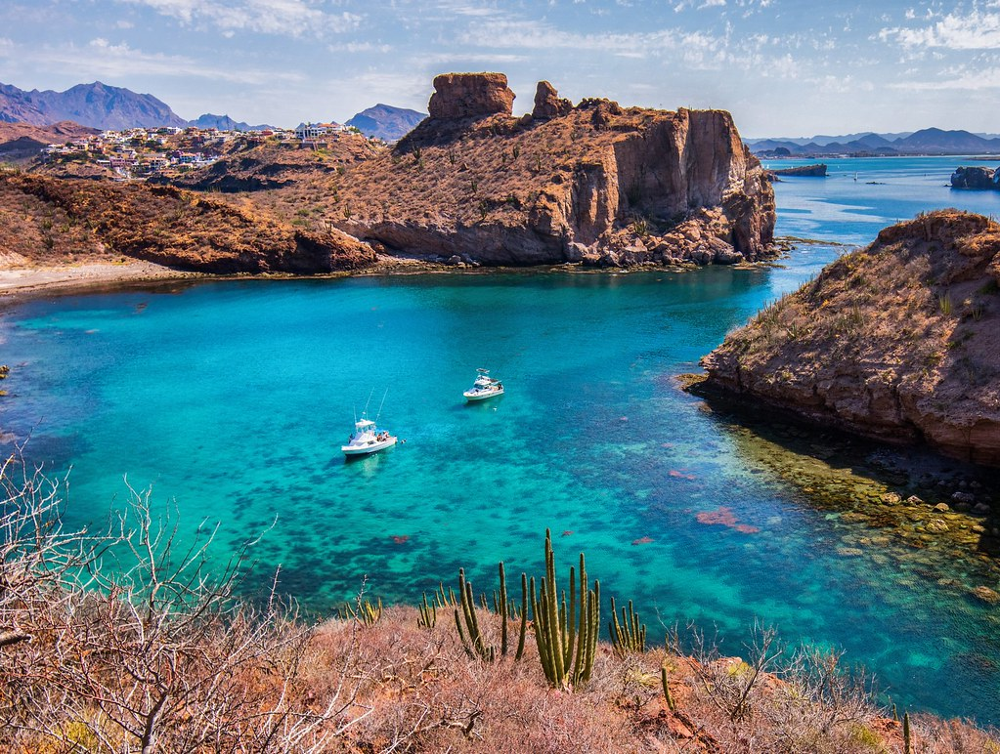
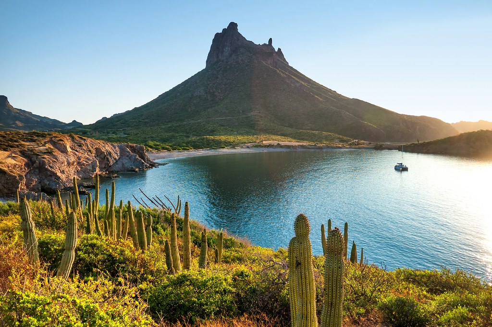

San Carlos, Sonora ofrece actividades de clase mundial para familias, viajeros aventureros y amantes de la naturaleza. Explora aventuras al aire libre, experiencias de vida marina, tours y actividades activas—complementando las hermosas playas y escena gastronómica.
Actividades Acuáticas y Aventuras Marinas

Snorkel y Buceo
Explora caletas, arrecifes y afloramientos rocosos llenos de peces coloridos.
- Piedras Pintas
- Isla de Lobos
- "El Acuario"
- Tours marinos guiados disponibles
Kayak y Paddle Board
Rema en aguas tranquilas con vistas de acantilados, paisajes desérticos y fauna silvestre.
- Tours matutinos para agua tranquila
- Perfecto para principiantes
- Oportunidades para ver fauna
- Equipo de renta disponible
Operadores de Tours Marinos Recomendados
Enrike's Adventures / San Carlos Adventures
Servicios: Kayaks • SUP • Tours de Snorkel • ATVs
Teléfono: +52 622-226-0289
WhatsApp: +52 622-130-7338
Dirección: Blvd Tetakawi, Plaza La Mar, Sector Crestón #6
San Carlos Aquatic Adventures
Servicios: Buceo • Snorkel • Tours Marinos
Ocean Sports San Carlos
Servicios: Renta de Kayaks y Paddleboards
Tours en Barco, Cruceros y Pesca Deportiva
Cruceros al Atardecer y Tours en Velero
Ve el Tetakawi brillar al atardecer desde el agua—una de las experiencias más icónicas de San Carlos.
Pesca Deportiva
San Carlos es conocido por jurel, dorado, marlín y róbalo. Los barcos charter operan todo el año.
Tours de Fauna Marina
Los tours guiados pueden encontrar delfines, lobos marinos, rayas y—estacionalmente—ballenas.
San Carlos Sailboat Cruises
Teléfono (MX): +52 622-172-9068
Teléfono (USA): +1 346-459-7974
Ubicación: Marina San Carlos
Paseo en Barco por la Costa con un Biólogo Marino
Explora la impresionante costa de San Carlos con un guía biólogo marino experto. Aprende sobre el ecosistema marino único, la vida silvestre y la geología del Mar de Cortés mientras disfrutas de vistas costeras espectaculares. ¡Perfecto para familias y entusiastas de la naturaleza de todas las edades!
📱 Teléfono/WhatsApp: +52 622 103-5257 | WhatsApp
🌟 Lo Más Destacado: Tour educativo para familias • Guía biólogo marino experto • Avistamiento de vida silvestre costera • Ideal para todas las edades • Experiencia única de aprendizaje
Aventuras Terrestres
Senderismo en Cerro Tetakawi
El punto de referencia más famoso de San Carlos. La caminata es empinada y rocosa pero ofrece vistas inmejorables.
- Mejor momento: amanecer o temprano en la mañana
- Dificultad: moderada a desafiante
- Lleva agua y protección solar
- Vistas 360° impresionantes desde la cumbre
Cañón de Nacapule
Un oasis desértico con paredes imponentes, pozas de agua dulce (estacionales) y senderos sombreados.
- Ideal para familias
- Perfecto para fotógrafos
- Ecosistema desértico único
- Dificultad fácil a moderada
Tours en ATV y Side-by-Side
Recorre dunas, senderos de cañón y miradores escénicos del desierto.
- Tours guiados por el desierto
- Varios niveles de dificultad
- Equipo proporcionado
- Incluye briefing de seguridad
SaltySun Rentals / Off the Edge
Servicios: ATVs • Side-by-Sides • Guías del Desierto
Teléfono: +52 622-226-0665
Celular: +52 622-103-5108
Experiencias de Naturaleza y Avistamiento de Fauna
Estero El Soldado (Estuario de Manglares)
Una reserva ecológica protegida ideal para observación de aves, kayak y eco-tours educativos.
Lobos Marinos en Isla de Lobos
Un corto paseo en barco te lleva a ver colonias de lobos marinos en su hábitat natural.
Observación de Aves
San Carlos alberga pelícanos, garzas, fragatas, águilas pescadoras y muchas especies migratorias.
- Estuarios y manglares
- Acantilados rocosos y playas
- Áreas de la marina
Ubicaciones Clave para Aventuras con Coordenadas
| Imagen | Ubicación | Actividad | Coordenadas | Mapa |
|---|---|---|---|---|
|  | Cerro Tetakawi (área de cumbre) | Senderismo, fotografía | 27.964° N, –111.040° W | Abrir Mapa |
| Entrada Cañón de Nacapule | Senderismo, naturaleza | 28.014° N, –111.035° W | Abrir Mapa | |
| Mirador Escénico | Fotografía, vista del Tetakawi | 27.952° N, –111.045° W | Abrir Mapa | |
|
Estero El Soldado (acceso kayak) | Eco tours, kayak | ~27.966° N, –110.997° W | Abrir Mapa |
Actividades Más Recomendadas
- Hacer senderismo en el Cerro Tetakawi al amanecer o atardecer
- Tomar un tour en kayak por los manglares del Estero El Soldado
- Ir a hacer snorkel o buceo en caletas rocosas y reservas marinas
- Reservar un crucero al atardecer o aventura privada en velero
- Experimentar tours en ATV por el desierto con guías locales
- Visitar el Cañón de Nacapule, un oasis único del desierto sonorense
- Probar charters de pesca deportiva para jurel, dorado y marlín
- Tomar un tour de fauna y naturaleza para ver delfines, aves y lobos marinos